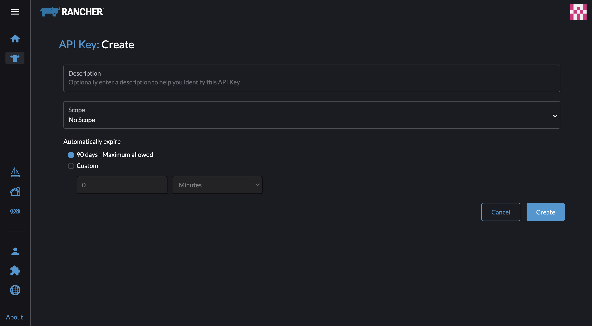
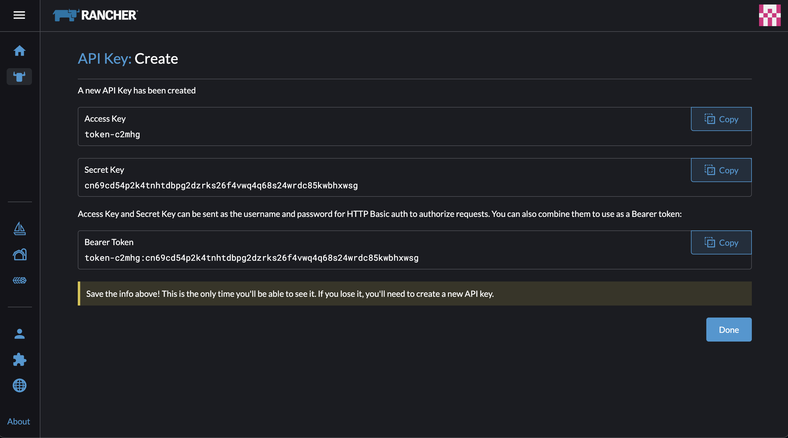
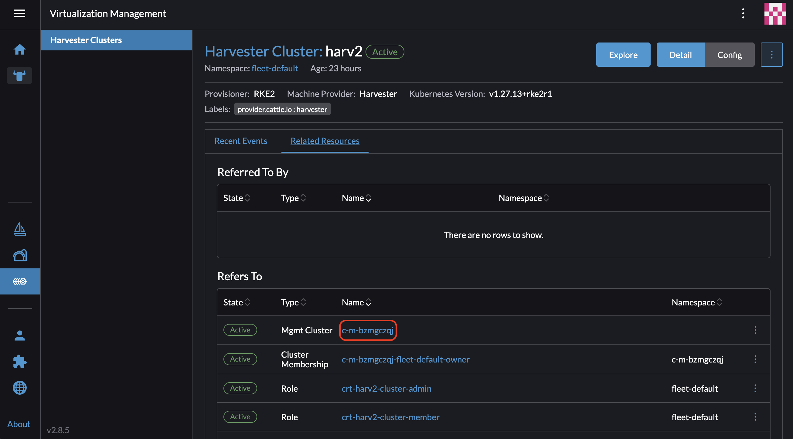
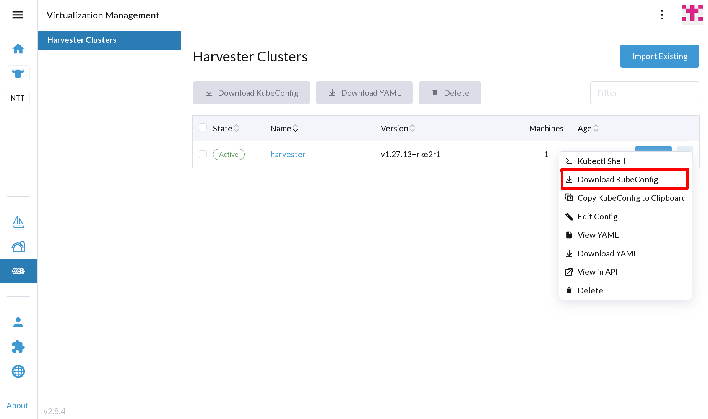

Rancher Terraform
The Rancher Terraform Provider allows administrators to create and manage RKE2 guest clusters using Terraform.
Deployment
Prerequisites
-
The Kubernetes cluster is built on top of Harvester VMs.
-
The Harvester VMs that run as guest Kubernetes nodes are in the same namespace.
Deploy Guest Clusters Using the Rancher Terraform Provider
-
Create an API key.
On the Rancher UI, go to Account & API Keys > Create API key > Create.


-
Obtain the Harvester cluster ID.
On the Rancher UI, go to Virtualization Management > Manage > Related Resources > Mgmt Cluster Name.
 -
Obtain the kubeconfig for the Harvester Cloud Provider and the Harvester CSI Driver.
-
UI
-
Shell
On the Rancher UI, go to Virtualization Management. Locate the target Harvester cluster in the list and then select ⋮ > Download KubeConfig.
# Generate harvester cloud provider kubeconfig RANCHER_SERVER_URL="<RANCHER_SERVER_URL>" # Pure server URL like https://192.168.0.181:6443 RANCHER_ACCESS_KEY="<RANCHER_ACCESS_KEY>" RANCHER_SECRET_KEY="<RANCHER_SECRET_KEY>" HARVESTER_CLUSTER_ID="<HARVESTER_CLUSTER_ID>" CLUSTER_NAME="rke2-demo" curl -k -X POST ${RANCHER_SERVER_URL}/k8s/clusters/${HARVESTER_CLUSTER_ID}/v1/harvester/kubeconfig \ -H 'Content-Type: application/json' \ -u ${RANCHER_ACCESS_KEY}:${RANCHER_SECRET_KEY} \ -d '{"clusterRoleName": "harvesterhci.io:cloudprovider", "namespace": "default", "serviceAccountName": "'${CLUSTER_NAME}'"}' | xargs | sed 's/\\n/\n/g' > ${CLUSTER_NAME}-kubeconfig -
-
Prepare a
provider.tffile with the following content:terraform { required_providers { rancher2 = { source = "rancher/rancher2" version = "4.2.0" } } } # Configure the Rancher2 provider to admin provider "rancher2" { api_url = "<api_url>" # API Endpoint on Account & API Keys page access_key = "<access_key>" secret_key = "<secret_key>" insecure = true # Set to true if the Rancher server uses a self-signed certificate } -
Prepare a
main.tffile with the following content:# Get imported harvester cluster info data "rancher2_cluster_v2" "harv" { name = "<harvester_cluster_name_in_rancher>" } # Create a new Cloud Credential for an imported Harvester cluster resource "rancher2_cloud_credential" "harv-cred" { name = "harv-cred" harvester_credential_config { cluster_id = data.rancher2_cluster_v2.harv.cluster_v1_id cluster_type = "imported" kubeconfig_content = data.rancher2_cluster_v2.harv.kube_config } } # Create a new rancher2 machine config v2 using harvester node_driver resource "rancher2_machine_config_v2" "rke2-machine" { generate_name = "rke2-machine" harvester_config { vm_namespace = "default" cpu_count = "2" memory_size = "4" disk_info = <<EOF { "disks": [{ "imageName": "default/<vmimage-name>", "size": 15, "bootOrder": 1 }] } EOF network_info = <<EOF { "interfaces": [{ "networkName": "default/<network-name>" }] } EOF ssh_user = "<ssh_user>" user_data = <<EOF package_update: true packages: - qemu-guest-agent - iptables runcmd: - - systemctl - enable - '--now' - qemu-guest-agent.service EOF } } resource "rancher2_cluster_v2" "rke2-demo" { name = "rke2-demo" kubernetes_version = "v1.28.10+rke2r1" rke_config { machine_pools { name = "pool1" cloud_credential_secret_name = rancher2_cloud_credential.harv-cred.id control_plane_role = true etcd_role = true worker_role = true quantity = 1 machine_config { kind = rancher2_machine_config_v2.rke2-machine.kind name = rancher2_machine_config_v2.rke2-machine.name } } machine_selector_config { config = yamlencode({ cloud-provider-config = file("${path.module}/rke2-demo-kubeconfig") cloud-provider-name = "harvester" }) } machine_global_config = <<EOF cni: "calico" disable-kube-proxy: false etcd-expose-metrics: false EOF upgrade_strategy { control_plane_concurrency = "1" worker_concurrency = "1" } etcd { snapshot_schedule_cron = "0 */5 * * *" snapshot_retention = 5 } chart_values = <<EOF harvester-cloud-provider: clusterName: rke2-demo cloudConfigPath: /var/lib/rancher/rke2/etc/config-files/cloud-provider-config EOF } } -
Run
terraform init. -
Run
terraform apply.